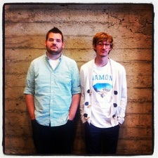

Origen
Bootstrap, originalmente llamado Blueprint de Twitter, fue desarrollado por Mark Otto y Jacob Thornton de Twitter, como un marco de trabajo (framework) para fomentar la consistencia entre las herramientas internas. Se renombró de Twitter Blueprint a Bootstrap y se lanzó como proyecto de código abierto el 19 de agosto de 2011. Mark Otto, Jacob Thornton y un pequeño grupo de desarrolladores principales, así como una gran comunidad de contribuyentes.
Mark Otto es un diseñador viviendo y trabajando en San Francisco, trabajó como freelance durante la secund aria y la universidad, antes de mudarse a California para trabajar en la empresa de diseño ZURB, en 2007.
Hasta la fecha Otto y Jacob han puesto más de 1000 horas en Bootstrap, sino es que más. Semanalmente trabajan de tiempo com pleto en sus respectivos empleos, pero suelen realizar esfuerzos durante algunas horas por la noche y más los fines de semana, esto quiere decir que ellos no trabajan de tiempo completo en Bootstrap.
Versiones
Durante el transcurso de su historia bootstrap se ha ido actualizando para adaptarse a los nuevos requisitos y tecnologias, que están siempre en constante cambio, y para mejorar su rendimiento y accesibilidad. En la siguiente tabla se puede ver las versiones, su fecha de salida y el momento en el que se terminaron:
| Version | Fecha de salida | Principal Novedad |
|---|---|---|
| Bootstrap 2 | 31/1/2012 | Diseño receptivo,soporte para glyphicons |
| Bootstrap 3 | 19/8/2013 | Diseño plano y primer enfoque móvil |
| Bootstrap 4 | 18/1/2018 | Importante reestructura del código, mejora en compatibilidad y personalización de la navegación |
| Bootstrap 5 | 5/5/2021 | Nuevo menú de componentes,API mejorada, soporte a escrituras RTL |